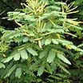
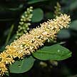

Saga tree
Adenanthera pavonina |
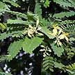
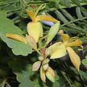
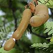
Asam tree
Tamarindus indica |

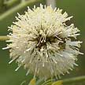
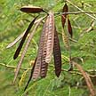
Petai jawa
Leucaena leucocephala |
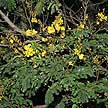
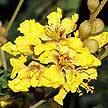
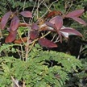
Yellow flame
Peltophorum pterocarpum |
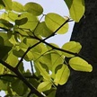
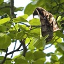
Ipil
Intsia bijuga |
| Tall
tree (up to 20m). Compound leaves feathery with small leaflets. Flowers
cream-yellow on long stalks. Pods coil and split revealing hard bright
red seeds. Sometimes seen on our shores, planted in some places. |
Tall
tree (20-25m). Compound leaves (6-12cm long) comprise little leaflets.
Orchid-like flowers pale yellowish with pink veins. Brown sausage-shaped
pods (4-20cm). Sometimes seen on our shores. |
A
shrub to small tree (10m). Compound leaves. Puff-ball shaped flowers.
Thin, flat pods. Sometimes common near our shores and in grasslands. |
Tree
(15-35m). Compound leaves. Flower yellow with wrinkled petals, may
cover the entire tree in a bloom. Pod brown, flat woody winged. Commonly
planted along roads and in parks, sometimes seen wild on shores. |
Tree
(40m). Compound leaves, one or two pairs opposite. Flowers in bunches,
one petal. Pod large woody flat. Sometimes seen in our back mangroves. |

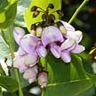
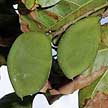
Mempari
Pongamia pinnata |
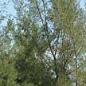

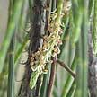
Rhu tree
Casuarina equisetifolia |
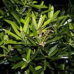
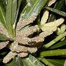
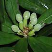
Sea teak
Podocarpus polystachus |
|
|
| Tall
tree (6-15m). Compound leaf with shiny heart-shaped leaflets. Flowers
lilac in bunches. Fruits are flat oval pods. Rare in the wild but
planted at many of our coastal parks. It is Endangered. |
Very
tall tree (up to 50m). Greenish 'needle-twigs'. Male flowers tiny
on short spikes (1.5-3cm). Female flowers pink fluffy bits on a stalk.
Cones green turning brown. Commonly seen in our coastal parks and
shores. |
Shrub
to small tree (1-20m). Leaves long, narrow and pointed (3-10cm), bright
green. No flowers, produces cones. Sometimes seen on our rocky shores.
It is Critically Endangered. |
|
|